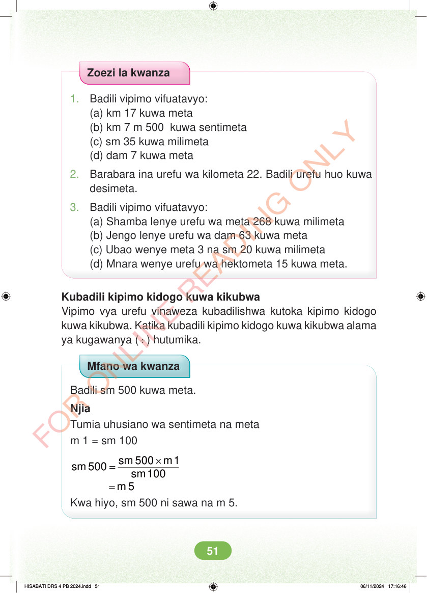

<!DOCTYPE html>
<html lang="sw-TZ"><head><meta charset="utf-8"><meta name="viewport" content="width=device-width,initial-scale=1">
<title>Hisabati: Kitabu cha Mwanafunzi Darasa la Nne</title>
<meta name="title-id" content="pg057_sec001"><meta name="page-section-id" content="60">
<link href="./content/tailwind_output.css" rel="stylesheet"><link href="./assets/libs/fontawesome/css/all.min.css" rel="stylesheet"><link href="./assets/fonts.css" rel="stylesheet">
<style>body{margin:0;background:#eef1ed}main{width:100%;display:flex;justify-content:center;padding:1rem 1rem 5rem;box-sizing:border-box}#content{width:100%;display:flex;justify-content:center}.pdf-page{position:relative;width:min(calc(100vw - 2rem),56rem);aspect-ratio:540.8980102539062/750.6610107421875;background:white;box-shadow:0 4px 24px #0002;overflow:hidden}.pdf-page img{position:absolute;inset:0;width:100%;height:100%;object-fit:fill}</style>
</head><body><main><h1 class="sr-only" id="page-heading">Ukurasa wa 57</h1><div id="content" class="opacity-0"><section role="article" data-section-type="pdf_accessible_page" data-section-id="pg057_sec001" aria-labelledby="page-heading" class="pdf-page"><p class="sr-only" data-id="pg057_gp001_tx001">Zoezi la kwanza 1. Badili vipimo vifuatavyo: (a) km 17 kuwa meta (b) km 7 m 500 kuwa sentimeta (c) sm 35 kuwa milimeta (d) dam 7 kuwa meta 2. Barabara ina urefu wa kilometa 22. Badili urefu huo kuwa desimeta. 3. Badili vipimo vifuatavyo: (a) Shamba lenye urefu wa meta 268 kuwa milimeta (b) Jengo lenye urefu wa dam 63 kuwa meta (c) Ubao wenye meta 3 na sm 20 kuwa milimeta (d) Mnara wenye urefu wa hektometa 15 kuwa meta. Kubadili kipimo kidogo kuwa kikubwa Vipimo vya urefu vinaweza kubadilishwa kutoka kipimo kidogo kuwa kikubwa. Katika kubadili kipimo kidogo kuwa kikubwa alama ya kugawanya ( ÷) hutumika. Mfano wa kwanza Badili sm 500 kuwa meta. Njia Tumia uhusiano wa sentimeta na meta m 1 = sm 100 × = = sm 500 m 1 sm 500 sm 100 m 5 Kwa hiyo, sm 500 ni sawa na m 5. HISABATI DRS 4 PB 2024.indd 51 HISABATI DRS 4 PB 2024.indd 51 06/11/2024 17:16:46 06/11/2024 17:16:46</p></section></div></main><div class="relative z-50" id="interface-container"></div><div class="relative z-50" id="nav-container"></div><script src="./assets/offline-preloader.js?v=audiofix-20260824-1"></script><script src="./assets/scorm.js"></script><script src="./assets/base.bundle.local.js?v=audiofix-20260824-1"></script></body></html>